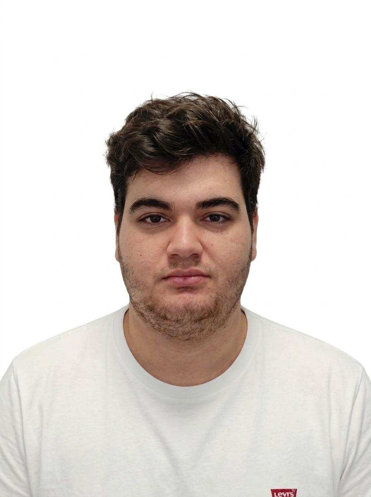
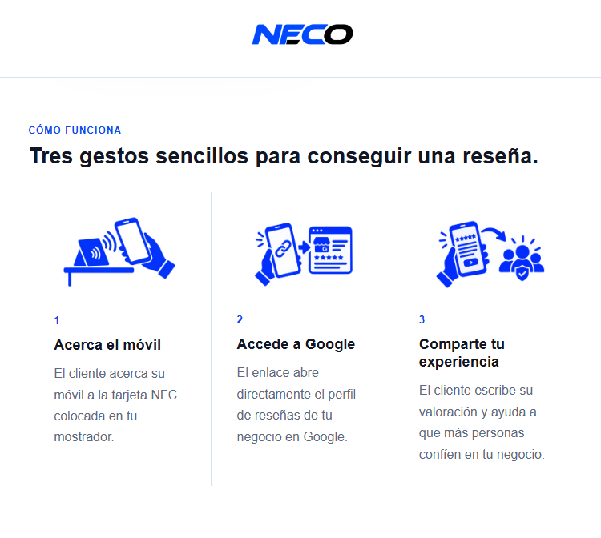
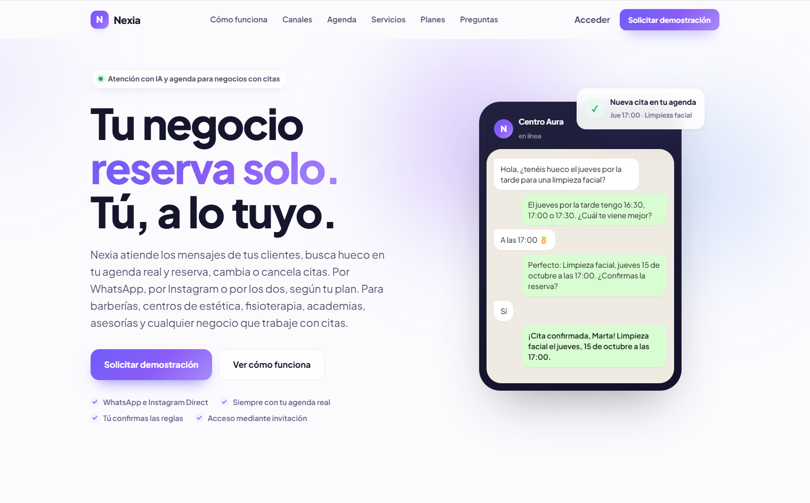
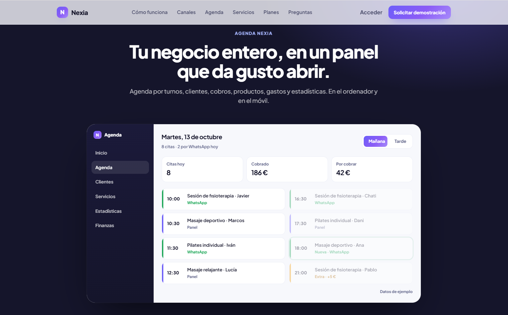

Ángel López
Desarrollador de aplicaciones Web
Ángel López
Se encarga de la lógica del servidor y de las bases de datos, y de que todo funcione por detrás sin que el usuario lo note.
Somos un equipo creativo formado por cuatro profesionales apasionados por diseñar experiencias digitales útiles y atractivas.
Desarrollador de aplicaciones Web
Se encarga de la lógica del servidor y de las bases de datos, y de que todo funcione por detrás sin que el usuario lo note.
Desarrollador de aplicaciones Web
Convierte los diseños en páginas limpias y fáciles de usar, cuidando que se vean bien en cualquier pantalla.
Desarrollador de aplicaciones Web
Trabaja tanto la parte visual como la del servidor y conecta las piezas para que el proyecto avance sin bloqueos.

Desarrollador de aplicaciones Web
Se centra en integraciones y automatizaciones que ahorran trabajo repetitivo a los negocios que atendemos.

NECO es un proyecto orientado al desarrollo de soluciones digitales para negocios locales, cuyo producto inicial son tarjetas NFC inteligentes que permiten a los clientes acceder directamente al perfil de reseñas de Google de un establecimiento mediante tecnología contactless.
Desde el punto de vista técnico, el proyecto busca evolucionar hacia un ecosistema digital propio, comenzando por el desarrollo de una página web corporativa y una plataforma de gestión que permita presentar los productos, captar clientes, gestionar pedidos y administrar la información de cada negocio.
El desarrollo web constituye una parte fundamental del proyecto, contemplando tecnologías como HTML, CSS, JavaScript, PHP y bases de datos MySQL, además de posibles integraciones mediante API y herramientas de automatización como n8n.
El objetivo a largo plazo es convertir NECO en una solución tecnológica escalable, ampliando sus funcionalidades y servicios digitales para ayudar a los pequeños negocios a mejorar su presencia y gestión online.
Visitar web
.png)
JARANASTUDIO.ES es una web desarrollada al gusto del cliente, da mucha más visibilidad a su negocio y cuenta con un formulario de contacto para que los clientes puedan hablar directamente con el peluquero.
Desde el punto de vista técnico, se ha desarrollado una web corporativa optimizada que muestra los servicios, precios, trabajos reales y reseñas de Google, además de facilitar la reserva directa de citas y el contacto mediante formulario, WhatsApp y mapa.
He desarrollado esta página web usando HTML, CSS, JavaScript y, para el formulario, he usado Web3Forms. Por ahora es una web simplemente informativa que no necesita base de datos.
El objetivo de esta web es dar más visibilidad al negocio de esta peluquería y que los clientes puedan reservar a través de ella con un solo clic desde móviles. Además, tiene como proyecto futuro integrar una pequeña tienda con los productos que allí se venden.
Visitar web.png)

Nexia es una recepcionista con inteligencia artificial pensada para negocios que trabajan con citas, como barberías, centros de estética, fisioterapia, academias o asesorías. Atiende a los clientes por WhatsApp e Instagram y reserva, cambia o cancela citas directamente en la agenda real del negocio.
Además de la recepcionista, incluye un panel de gestión con agenda, clientes, cobros, productos, gastos y estadísticas, y un módulo de eventos con venta de entradas y control de acceso mediante código QR.
La web presenta el producto de forma clara: cómo funciona, canales de atención, agenda, servicios, planes, preguntas frecuentes y privacidad, con un formulario para solicitar una demo. La atención por mensajería se conecta mediante las APIs oficiales de Meta para WhatsApp e Instagram.
El objetivo es que las pequeñas empresas ahorren tiempo automatizando la atención al cliente y la gestión de citas. Funciona por invitación con planes Básico y Pro, y el plan Premium llegará próximamente.
Visitar web